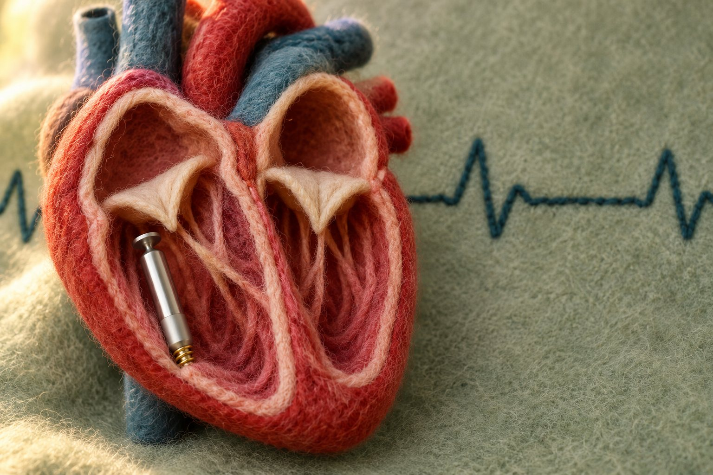

無導線心臟節律器是什麼？心房型、心室型、雙腔怎麼選
無導線心臟節律器（也叫無導線心律調節器）把整套節律器縮成一顆膠囊大小，直接放進心臟裡：胸前沒有傷口、沒有皮下口袋，也沒有穿過血管的導線。現在它不只一種，有放在右心室的心室型、放在右心房的心房型，還有心房和心室各放一顆的雙腔系統。

重點摘要
無導線節律器差不多一顆膠囊大小，醫師從大腿根部的靜脈放入導管，把它送進心臟、直接固定在心臟壁上。胸前不用開刀、沒有皮下口袋和導線，傳統節律器常見的導線斷裂、導線移位、口袋感染和胸前凸起，它都避開了，術後也不用限制手臂活動。現在有心室型、心房型和雙腔系統，可以依心跳慢的原因，選擇要刺激哪一個心腔。健保是有條件給付，要經事前審查。
撰寫：林柏霖醫師（新竹馬偕紀念醫院心臟內科）｜更新 2026-11-24
和傳統節律器差在哪？
傳統節律器的做法，是在胸前鎖骨下方開一道約 3 到 4 公分的傷口（依個人狀況略有不同），在皮下做一個口袋放電池，再經靜脈拉一條或兩條導線進心臟。無導線節律器則把電池和電極做成一體，整顆放進心臟裡，從根本拿掉了導線和口袋。
| 項目 | 傳統節律器 | 無導線節律器 |
|---|---|---|
| 傷口 | 胸前鎖骨下方約 3 到 4 公分，會留疤 | 大腿根部一個穿刺傷口，胸前不用開刀 |
| 胸前外觀 | 皮下看得到、摸得到一顆凸起；背包肩帶、安全帶長期壓迫摩擦，嚴重時皮膚可能磨破、裝置外露 | 胸前平的，看不出來 |
| 導線與口袋 | 導線可能斷裂、移位，口袋可能感染；導線穿過三尖瓣，部分病人會出現三尖瓣逆流 | 沒有導線、沒有口袋 |
| 術後活動 | 一段時間內裝置側的手不能突然舉高過肩、不提重物，時間依醫院指示 | 不需要限制手臂活動；穿刺側的腿依醫院指示休息 |
| 可選的類型 | 單腔、雙腔 | 心室型、心房型、雙腔系統 |
導線和口袋，是傳統節律器長期問題的主要來源。荷蘭一項追蹤 1,517 人、平均 5.8 年的研究，植入兩個月後仍有 9.2% 的人出現併發症，多數和導線有關。美國聯邦醫療保險的理賠資料（觀察性研究，並非隨機分組）比較單腔無導線與傳統單腔節律器三年，無導線的長期併發症風險低約三成（32%），再次手術的風險低約四成（41%）。這項研究有廠商參與，而且只比較單腔心室型。
外觀也不只是好不好看。胸前裝置的疤痕和凸起，在裝心臟去顫器（ICD）的病人身上，有研究發現會帶來身體意象的困擾，女性和年輕病人更明顯。節律器的凸起位置和形狀類似，年輕或在意外觀的人，值得在選擇時一併討論。
放無導線或傳統節律器，都是經由血管進到心臟的手術，都可能發生心臟穿孔、出血等併發症；無導線節律器也有自己的風險，例如裝置位置不穩。術前我會把病人的狀況和兩種做法的風險一起說明。
兩種固定設計：之後取得出來嗎？可以放在哪裡？
無導線節律器要牢牢固定在心臟壁上，目前有兩種固定設計：一種用末端的小螺旋，像螺絲一樣旋進心肌；另一種用末端幾根有彈性的細爪勾住心肌。兩種設計在「之後能不能取出」和「固定之前能不能先量測」這兩件事上有差別。
電池用完：取出，還是留在原處
國際心律學會 2022 年的立場文件寫明，無導線節律器不再使用時，可以先關閉、在旁邊再放一顆新的，也可以取出後重放，兩種做法都被接受，沒有規定一定要取出。
螺旋固定的設計，一開始就配有專用的取出工具：導管抓住機身尾端的對接頭，把螺旋反向旋出來。一項廠商贊助的多國研究，追蹤上一代螺旋型無導線節律器，在植入後平均 3.2 年、最長 9 年嘗試取出，大多數人都順利取出，而且植入時間長短不影響能不能取出；約 3.9% 的人發生和取出有關的併發症。細爪固定的設計，電池用完時多半是關閉後留在原處，需要時也能取出：歐洲 11 家醫院 85 人的經驗，絕大多數順利取出，但多數是植入幾個月內就取出，植入越久、放在心尖，越不容易取出。兩種設計沒有直接比較的研究，這兩份經驗不能拿來互相比較。
年輕、預期一輩子要換好幾次節律器的人，「之後能不能取出」值得在術前一起討論。
放在哪裡
國際學會建議放在右心室中隔的中段，避開比較薄的右心室游離壁，以降低穿孔風險。觀察性研究也發現，放在中隔或右心室出口，起搏時的心電圖波形比放在心尖更窄，比較接近心臟自然的傳導。螺旋固定的設計，可以在旋入之前先貼著心肌量測電訊號，確認位置合適再固定；細爪固定的設計，要固定之後才能量測，位置不理想就要重新放。
為什麼傳統導線和口袋出問題很麻煩
傳統節律器一旦口袋感染，或裝置把皮膚磨破、露出來，國際指引的建議是把電池連同所有導線整套移除，不能只換電池或清傷口，因為皮膚破口代表整個系統都可能已經受到汙染。導線在血管和心臟裡放了多年，會和組織黏在一起，要用專門工具拔除：歐洲 3,510 人的登錄研究，拔除手術的嚴重併發症約 1.7%、死亡約 0.5%。感染本身也很危險，大型研究中裝置感染後 30 天的死亡率是 5.5%，一年是 14.6%；口袋出現血腫的人，之後感染的風險高出 7 倍以上。台灣健保把口袋感染、裝置磨破皮膚列為導線移除的給付條件，執行的醫師要另外受訓，並向健保署核備。
無導線節律器沒有口袋、沒有導線，從設計上避開了這一整串問題。對感染風險高的病人，美國心臟協會 2024 年的科學聲明也認為，選擇無導線節律器是合理的做法。
誰適合？心房型、心室型、雙腔怎麼選
節律器要刺激哪個心腔，要看心跳慢的原因出在哪裡。這也是無導線節律器現在分成三種的原因。
病竇症候群：問題在心房，要照顧到心房
病竇症候群是心臟天然的節律點（竇房結）變慢或停頓，問題出在心房發電。歐洲心臟學會 2021 年節律器指引寫明，病竇症候群的首選是能同時照顧心房和心室的雙腔節律，不是只刺激心室。只刺激心室的話，心房和心室各跳各的：指引指出，病竇症候群病人若只做心室節律，可能有超過四分之一出現頭暈、疲倦、心悸等「節律器症候群」；大型研究也發現，只刺激心室的人心房顫動較多。指引也提到，右心室起搏的病人，約一成到兩成在兩到四年後出現心臟收縮力下降，醫學上稱為節律器誘發心肌病變（這個比例以右心室起搏計算，不是專指病竇症候群）。
早期無導線節律器只有心室型，病竇症候群病人若要無導線，也只能放心室型。現在有了心房型，以及心房、心室各一顆的雙腔系統，病竇症候群也能選擇照顧到心房的無導線方案。2026 年 12 月 1 日起健保把心房型寫進給付規定，但只限裝不了傳統節律器的人，多數人要自費（詳見下方「健保怎麼給付」）。
房室傳導阻滯、心房功能還在：雙腔系統
心房發電正常，但訊號傳不到心室，需要心房和心室照順序跳。雙腔無導線系統在右心房、右心室各放一顆，兩顆之間用電訊號互相溝通，維持房室同步。2023 年《新英格蘭醫學期刊》一項廠商贊助的單組研究收了 300 位病人，三個月時坐姿下有 97.3% 達到至少七成的房室同步；但同一研究裡約一成（9.7%）的人在 90 天內出現與裝置或手術相關的嚴重不良事件。運動或心跳加快時的同步效果，目前不一定比得上傳統雙腔節律器。
心房顫動合併心跳過慢：心室型
心房已經持續在顫動，不需要也無法刺激心房，只要把心室的跳動顧好，單腔的心室型無導線節律器就合適。
台灣已有心房型與雙腔系統可用；能不能用健保，看下方的條件，多數人是自費。哪一種比較適合，我會先把心電圖和 24 小時心電圖攤開來，看是竇房結慢了、傳導卡住了，還是合併心房顫動，再和病人一起決定。
想顧生活品質，無導線節律器值得考慮嗎？
裝節律器，是為了讓心跳穩定，避免頭暈或昏倒而造成更大的傷害。現代人在接受必要的治療之外，更期望有良好的生活品質。
節律器一放就是很多年，它會每分每秒監測您的心率狀況，給予必要的介入守護。
傳統節律器把電池主機放在胸前皮下，有傷口縫合後的痕跡，有些體型纖細的人，則看得出凸起；術後一段時間，裝置那一側的手不能突然舉高過肩、不能提重物；日後每次換電池，都會將原本的傷口反覆開合。
無導線節律器放在心臟裡，胸前沒有傷口、沒有口袋，也沒有導線，術後不用限制手臂活動。
如果您很在意外觀，工作或運動常需要舉手、出力，或擔心口袋和導線日後出問題，即使要自費，無導線節律器也是值得和醫師好好討論的選擇。
它不是每個人都適合，也有自己的風險；我會依心跳慢的原因、身體狀況和您在意的生活，一起決定哪一種比較適合。
健保怎麼給付？
先講結論：健保只給付裝不了傳統節律器的人，這只是少數；多數想裝無導線節律器的人是自費。
2026 年 12 月 1 日起，健保依心跳慢的原因分三種申請：
- 問題在心房（病竇症候群），心房到心室的傳導還正常：申請心房型。
- 長期的心房顫動（持續性或永久性）合併房室傳導阻滯：申請心室型。先裝了心房型、後來才出現房室傳導阻滯的人，也可以再申請心室型。
- 房室傳導阻滯，但沒有長期的心房顫動、心房還能正常跳：申請能感應心房的心室型。
三種都要先符合一個條件：裝不了傳統節律器，例如兩邊鎖骨下的靜脈塞住、上腔靜脈變窄或塞住、有洗腎用的廔管或導管、胸前放了化療用的人工血管，或胸前裝置的位置曾經感染、開刀清創，胸前做過腫瘤切除、放射治療，或有嚴重燒燙傷。醫院會先幫病人送健保審查，通過才能用健保。新病人一次同時裝心房、心室兩顆，條文沒有列。
不符合條件的人，可以選擇自費，費用請向醫院詢問。細節以健保署公告為準。
電池用完、做核磁共振怎麼辦？
電池
電池壽命依機型和起搏比例而定，廠商提供的年限是推估。電池用完時，可以把舊的關閉留在原處、在旁邊再放一顆新的，也可以用導管取出再放新的；能不能取出，要看固定設計、放了多久和放的位置（請見上面兩種固定設計）。
核磁共振
相容的機型可以做核磁共振，但要依規定先調整設定。排檢查前，一定要先告訴醫院自己裝有無導線節律器，並帶著裝置卡。
林柏霖醫師和無導線節律器
新竹馬偕自 2017 年 8 月引進膠囊型無導線節律器，我是院內評估這類病人的醫師之一，2026 年也接受聯合報採訪，說明無導線與傳統節律器的差別。更早之前我寫過一篇〈心跳慢了怎麼辦？心臟節律器該怎麼選〉；想先看影片和圖解，可以到節律器衛教專區。

延伸閱讀
常見問題
病竇症候群可以放無導線節律器嗎？
可以，但要選對類型。病竇症候群的問題在心房，國際指引首選能照顧心房的雙腔節律；現在無導線有心房型和雙腔系統可選，不必只放心室型。健保 2026 年 12 月 1 日起把心房型寫進給付規定，但只限裝不了傳統節律器的人，其他人要自費。
裝了無導線節律器，手可以舉高嗎？
可以。傷口在大腿根部，術後不需要限制手臂活動；穿刺那一側的腿，術後依醫院指示休息。
無導線節律器健保會給付嗎？
只給付少數人：裝不了傳統節律器的人，例如血管塞住或變窄、有洗腎用的廔管或導管，或胸前裝置處感染開過刀、做過放射治療，並先通過健保審查。2026 年 12 月 1 日起依心跳慢的原因分心房型、心室型申請。其他人想裝，要自費。
無導線節律器電池沒電要開刀拿出來嗎？
不用開刀。可以把舊的關閉、在旁邊再放一顆新的，也可以從大腿靜脈用導管取出再放新的，兩種都是國際學會接受的做法。能不能取出，要看固定設計、放了多久和放的位置。
參考資料
- 健保署：全民健康保險特殊材料給付規定（B101-3 無導線心律調節器、B101-4 雙腔無導線心律調節器）
- 健保署：無導線心律調節器給付規定修正對照表（B101-3、B101-4、B101-6，2026 年 12 月 1 日生效）
- 健保署：全民健康保險醫療服務給付項目及支付標準修正對照（47103A，2026 年 9 月 1 日生效）
- 歐洲心臟學會 2021 心臟節律器與再同步治療指引（Eur Heart J 2021;42:3427）
- MOST 研究：病竇症候群雙腔與心室節律比較（N Engl J Med 2002）
- 歐洲心律學會等四學會 2022 無導線節律器立場文件（Europace 2022;24:1691）
- 螺旋固定型無導線節律器全球慢性取出經驗（J Am Coll Cardiol 2025;85:1111，廠商贊助、上一代器材）
- 細爪固定型無導線節律器取出：歐洲 11 中心 85 人（Europace 2026）
- 無導線節律器放置位置與起搏波形：單一中心 133 人（J Cardiovasc Electrophysiol 2019）
- 無導線節律器螺旋與細爪設計綜述（J Clin Med 2023）
- 美國心律學會 2017 植入式心臟裝置導線管理與拔除專家共識
- ELECTRa 歐洲導線拔除登錄研究：3,510 人（Eur Heart J 2017）
- 口袋血腫與裝置感染：BRUISE CONTROL INFECTION（J Am Coll Cardiol 2016）
- 美國心臟協會 2024 植入式心臟裝置感染科學聲明（Circulation 2024）
- 健保署：特殊材料給付規定 B105-1 經皮移除心臟內導線裝置（109/05/01 起）
- 雙腔無導線節律器國際研究（N Engl J Med 2023）
- FOLLOWPACE：傳統節律器長期併發症（Heart Rhythm 2012）
- 美國 Medicare 無導線與傳統節律器三年比較（J Cardiovasc Electrophysiol 2023）
- 導線相關三尖瓣逆流（Heart 2014；受試者多為 ICD 病人）
- 植入式心臟去顫器（ICD）病人的身體意象研究回顧（Pacing Clin Electrophysiol 2018）
- 中央社 2026-07-16：無導線節律器健保給付個案
- 公視新聞 2025-11-25：雙腔無導線節律器在台灣
- TVBS 2026-02-26：心房無導線節律器
- TVBS 2025-11-25：雙腔無導線節律器
- 聯合報 2026-04-23：無導線節律器（林柏霖醫師受訪）
- 新竹馬偕 2017 年 8 月引進無導線節律器（元氣網 2018-07-05）
每個人的病情不同，本頁不能取代門診評估。想知道自己適不適合，請帶著過去的心電圖與檢查報告來門診討論。

心房顫動電燒
心房顫動會讓心跳亂掉，也會讓中風風險變高。電燒不是每個人的第一步，但對症狀明顯、吃藥控制不好的人，是值得認真了解的選項。
繼續看 →桃竹苗就近看診：#桃園#中壢#楊梅#新屋#龍潭#新竹市#竹北#竹東#湖口#新豐#寶山#芎林#竹南#頭份#苗栗